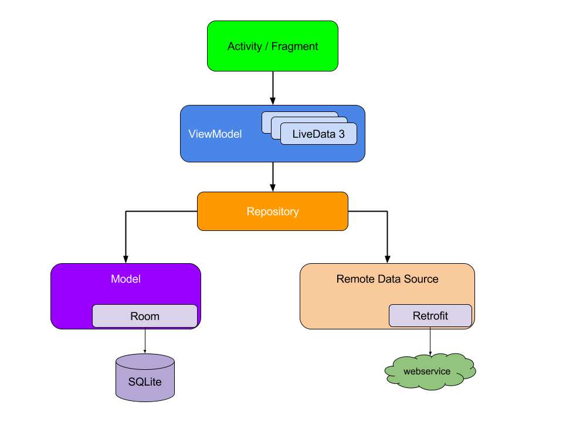

AAC 에 대하여 이해하기 위해 간략히 내용을 훑어본다.
Android Architecture Components
테스트와 유지 관리가 쉬운 앱을 디자인하도록 돕는 라이브러리 모음. 여기 내용을 참고.
잘 구성되어 Final architecture 는 아래와 같은 구조가 될 것.

각 구성요소가 한 수준 아래의 구성 요소에만 종속되는것을 볼 수 있다. Repository 는 유일하게 여러개의 다른 클래스에 종속된다.
위와 같은 설계의 장점 : 사용자에게 보이는 정보가 Activity 의 lifecycle 과 관계 없이 일관되게 표시될 수 있다.
가령 Activity 가 Data에 종속되어 있는 경우는 예를 들어 화면이 가로모드로 회전된다거나 할때 Activity lifecycle에 따라 표시되는 화면이 다라 질 수 있다.
또한 앱이 종료되고 한참 뒤에 다시 사용하는지 이런 환경과 관계 없이 로컬에 보존된 데이터가 바로 표시되게 되고 때에 따라서 Reposotiry에서 데이터 업데이트를 하게 된다.
이제 이 구조를 만들고 앱을 구성하기 위한 여러가지 요소들이 존재한다. LiveData, ViewModel, Room, Paging …
하나씩 필요한것들을 확인해 나가 볼 예정.